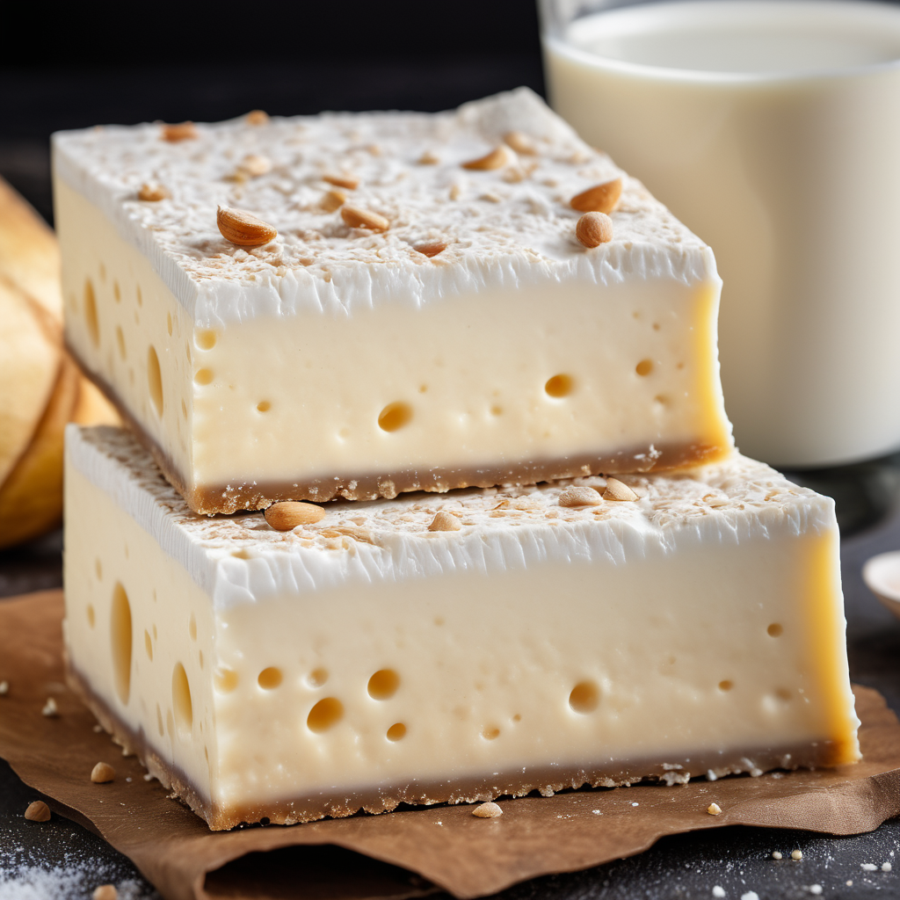

Hozzávalók:
tészta réteghez:
- 6 tojás
- 200 g cukor
- 200 g liszt
- 1 tk sütőpor
- 1 Csipet só
krém réteghez:
- 1 l tej
- 4 tojás
- 100 g cukor
- 1 vaníliarúd vagy vaníliás cukor ízlés szerint
- 2 ek liszt
hab réteghez:
- 4 tojásfehérje
- 1 Csipet só
- 50 g porcukor
Díszítéshez:
- Reszelt csokoládé vagy kakaópor
Elkészítés:
- Először készítsük el a tészta réteget. Válasszuk szét a tojásokat, és a sárgáját keverjük össze a cukorral, majd add hozzá a lisztet, a sütőport és a csipet sót.
- Verjük fel a tojásfehérjéket kemény habbá, majd óvatosan keverjük össze a sárgás cukros lisztes keverékkel.
- Öntsük a masszát egy sütőpapírral kibélelt tepsibe, majd süssük előmelegített sütőben 180°C-on kb. 20-25 percig, vagy amíg aranybarna és átsült.
- Amíg a tészta sül, készítsük el a krém réteget. Melegítsük fel a tejet a vaníliával vagy vaníliás cukorral egy lábasban. Közben keverjük össze a tojások sárgáját a cukorral és a liszttel.
- Amikor a tej felforrt, öntsük lassan a tojásos keverékre, állandóan kevergetve. Főzzük, amíg a krém besűrűsödik. Ezután hagyjuk kihűlni.
- Közben készítsük el a hab réteget. Verjük fel a tojásfehérjéket a csipet sóval, majd fokozatosan adjuk hozzá a porcukrot, és verjük kemény habbá.
- Amikor a tészta megsült és kihűlt, kenjük rá a krémet, majd terítsük el a habot a tetejére.
- Díszíthetjük a tetejét reszelt csokoládéval vagy kakaóporral.
- Hagyjuk hűlni a hűtőben legalább 1-2 órán át, majd szeleteljük fel és tálaljuk.